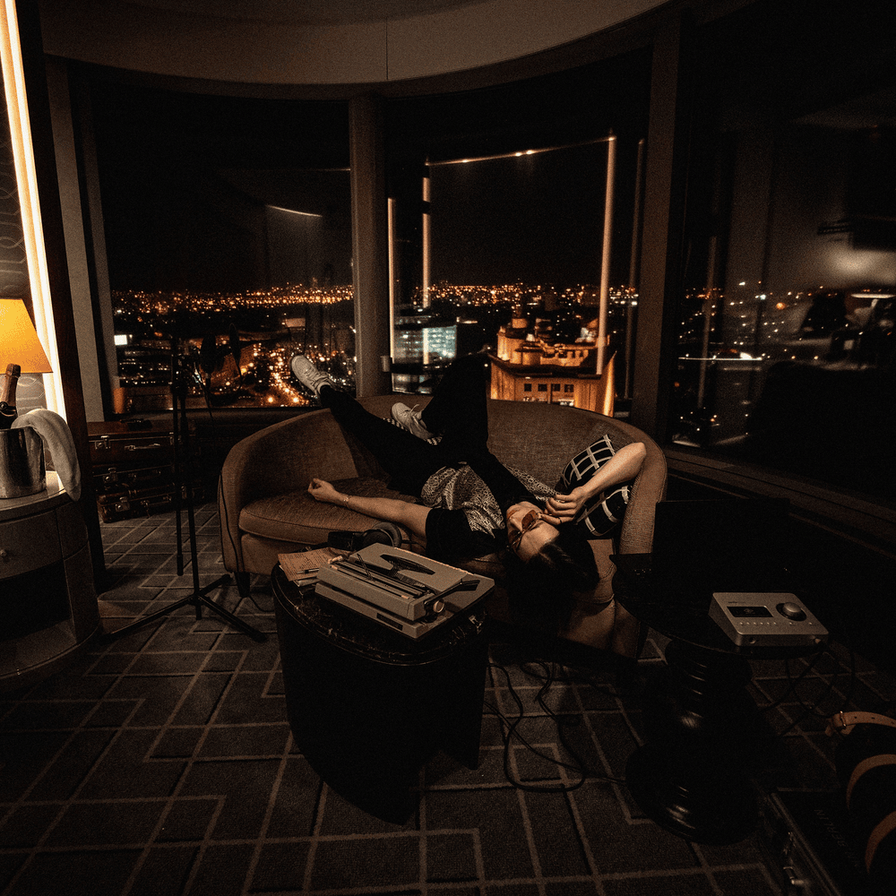
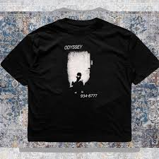

Официальный релиз трека Heronwater состоялся на всех площадках. Трек уже бьет рекорды в чартах.
Подробнее
OUR MINDS NEED
MUSIC AS MUCH AS
OUR SOULS
NEED LOVE



Концертные туры и масштабные фестивали остаются главным источником чистой энергии и заработка для рэп-сообщества. Слэм в толпе, взрывы пиротехники, тысячи светящихся экранов телефонов и синхронное скандирование текстов создают неповторимую атмосферу единства. Живые выступления требуют от рэпера колоссальной выносливости и умения управлять толпой, удерживая внимание стадиона на протяжении двух часов без потери качества подачи и дыхания на быстрых пассажах.
Не стоит забывать и о влиянии моды: хип-хоп полностью переписал законы стритвира. Оверсайз-худи, массивные кроссовки, дорогие цепи и дизайнерские коллаборации стали неотъемлемой частью рэп-культуры. Крупные модные дома выстраиваются в очередь, чтобы подписать контракты с топовыми хип-хоп исполнителями, признавая их главными иконами стиля современности. Одежда артиста транслирует его статус, музыкальные ориентиры и принадлежность к определенному лайфстайлу.
Студийная магия — это сердце всей индустрии, где абстрактные идеи превращаются в золотые диски. Эксперименты с вокальными процессорами, использование автотюна как полноценного музыкального инструмента и наложение плотных бэк-вокалов позволяют добиваться невероятной глубины трека. Рэп-продюсеры сегодня выступают в роли полноценных композиторов, создавая сложные многослойные аранжировки, которые легко конкурируют с классической и электронной музыкой по уровню проработки.